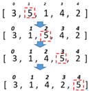

Задача 4
Для розглянутих методів сортування спробувати вивести етапи сортування шляхом виведення відповідних таблиць за зразком. 
Тобто кожного разу після обміну елементів вивести поточний стан масиву на екран (стрілки не потрібні).